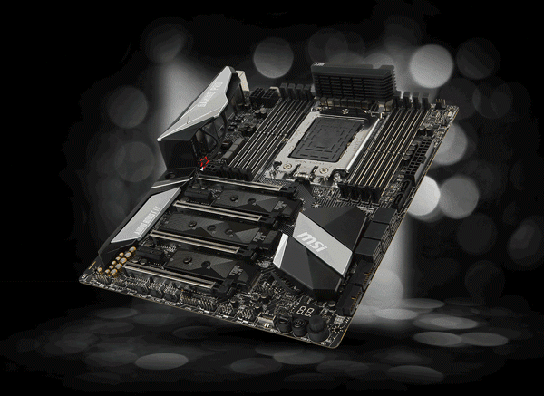
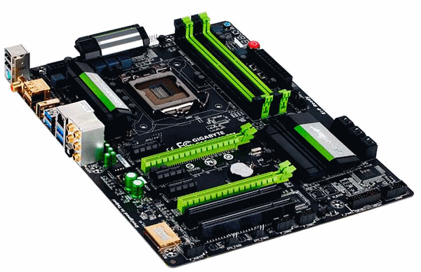

¿Qué es Tarjeta Madre?
La tarjeta madre, es la placa principal en la estructura interna del computador donde se encuentran los circuitos electrónicos, el procesador, las memorias y las conexiones principales. Al referirse a la placa base, se habla de un tipo de tecnología que ha estado presente desde el inicio de la historia de las computadoras hasta la actualidad. En ella se conectan todos los componentes del computador teniendo como función principal controlar todos los elementos del servidor para brindarle un funcionamiento óptimo al usuario. De ella depende que dichos componentes estén bien comunicados unos de otros para garantizar el funcionamiento del sistema.
Componentes Principales
Algunos de los componentes más comunes son:
- Chipset: Es fundamental para gestionar el flujo de datos entre el procesador, la RAM y los dispositivos de almacenamiento.
- Ranuras de expansión: Permiten mejorar o añadir funcionalidades a la computadora con tarjetas adicionales.
- BIOS/UEFI: Inicializa los componentes del sistema al encenderse y permite configurar opciones básicas.
- Puertos USB y otros conectores: Proveen conexiones para dispositivos externos, como teclados, ratones y unidades USB.
- Conectores de audio y red: Permiten conectar la tarjeta madre a dispositivos de sonido y redes de comunicación.
- Conectores SATA y NVMe: Sirven para conectar dispositivos de almacenamiento, como discos duros y unidades de estado sólido.

